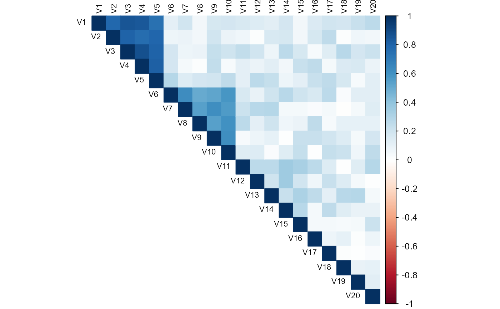
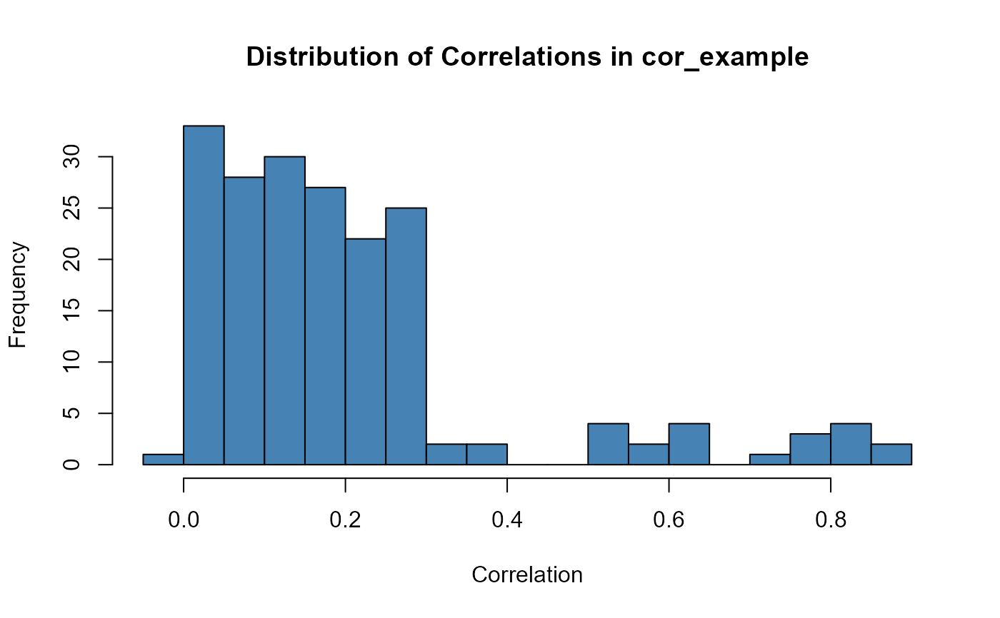

A 20x20 correlation matrix with known block structure designed for demonstrating threshold selection, algorithm comparison, and visualization examples in vignettes.
Format
A 20x20 numeric correlation matrix with row and column names V1-V20. The matrix has four distinct correlation blocks:
- Block 1 (V1-V5)
High correlation: mean = 0.81, range = (0.75, 0.95)
- Block 2 (V6-V10)
Moderate correlation: mean = 0.57, range = (0.5, 0.7)
- Block 3 (V11-V15)
Low correlation: mean = 0.28, range = (0.2, 0.4)
- Block 4 (V16-V20)
Minimal correlation: mean = 0.06, range = (0.0, 0.15)
Between-block correlations are low (range = (0.0, 0.3)). The matrix is guaranteed to be positive definite.
Details
This dataset provides a controlled correlation structure useful for:
Threshold sensitivity analysis (comparing results at tau = 0.5, 0.7, 0.9)
Algorithm comparison (exact vs greedy modes)
Visualization examples (heatmaps, correlation distributions)
Reproducible benchmarks across vignettes
Expected behavior with different thresholds:
tau = 0.5: Block 1 requires pruning (all pairs > 0.75)
tau = 0.7: Blocks 1-2 require pruning
tau = 0.9: Only Block 1 requires pruning
Examples
data(cor_example)
# Matrix dimensions
dim(cor_example)
#> [1] 20 20
# Visualize structure
if (requireNamespace("corrplot", quietly = TRUE)) {
corrplot::corrplot(cor_example, method = "color", type = "upper",
tl.col = "black", tl.cex = 0.7)
}

# Distribution of correlations
hist(cor_example[upper.tri(cor_example)],
breaks = 30,
main = "Distribution of Correlations in cor_example",
xlab = "Correlation",
col = "steelblue")

# Use with MatSelect
library(corrselect)
results <- MatSelect(cor_example, threshold = 0.7, method = "els")
show(results)
#> CorrCombo object
#> -----------------
#> Method: els
#> Threshold: 0.700
#> Subsets: 5 maximal subsets
#> Data Rows: 20 used in correlation
#>
#> Top combinations:
#> No. Variables Avg Max Size
#> ------------------------------------------------------------
#> [ 1] V2, V6, V7, V8, V9, V10, ... 0.173 0.627 16
#> [ 2] V4, V6, V7, V8, V9, V10, ... 0.176 0.627 16
#> [ 3] V1, V6, V7, V8, V9, V10, ... 0.181 0.627 16
#> [ 4] V3, V6, V7, V8, V9, V10, ... 0.182 0.627 16
#> [ 5] V5, V6, V7, V8, V9, V10, ... 0.183 0.627 16